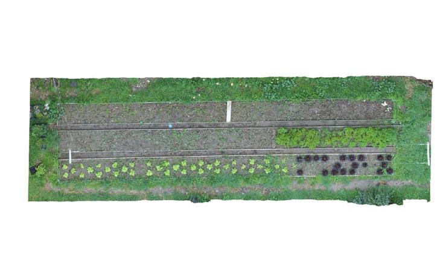
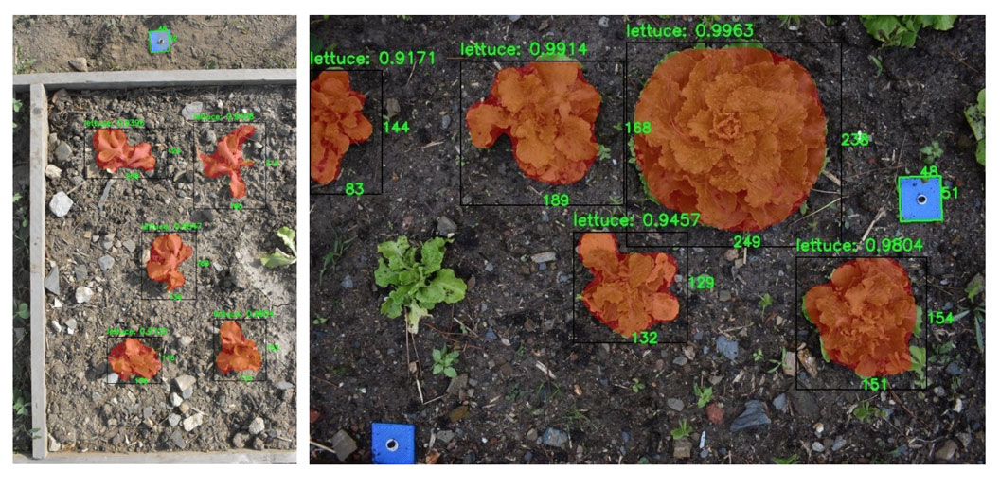
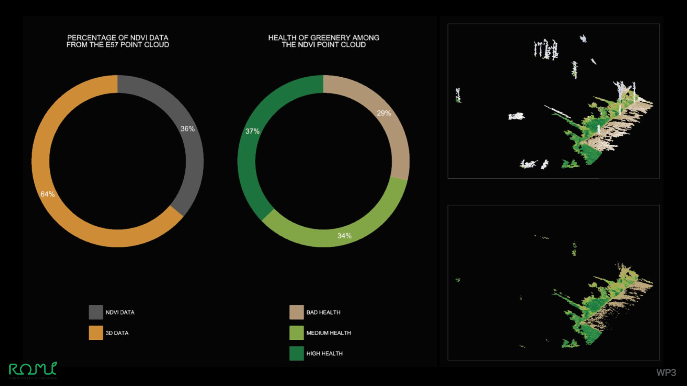

The Farmer’s Dashboard is a farming tool that provides daily automated insights about your crops. It helps with mapping of crop bed, the location and identification of individual plants, and the extraction of their growth curves from the collected data.
It is a set of hardware and software tools for affordable, customisable and high frequency crop monitoring.

The dashboard supports farmers with imaging and analytics that identify and track plant growth. Image data may be recieved from multiple sources, including drones, the rover and also a cablebot.
The Cablebot is adapted for use in greenhouses and polytunnels. These installations take up more than 10% of microfarms and are ill-suited for the use of drones.

Because of the legal restrictions on the use of drones and because of the rapid evolution of the drone market,
the ROMI project has decided to direct its effort to a hardware solution that complements the existing tools (commercial drones, the Rover): the Cablebot.
This reorientation increases the impact of ROMI since we can handle a wider variety of contexts than planned. The use of drones is still an option.
Existing drones can still be used in combination with the Farmer’s Dashboard.

The Cable Bot can be fixed above a crop bed using a tensioned cable,
which is especially easy using a polytunnel. We can use the manual remote to correctly position the camera, to capture all of the crops. Once set up, the Cable Bot will move multiple times a day across the crop bed, taking high definition images and sending them to a ROMI server.
The images are assembled into a unique portrait of your crop bed.
After plants are detected, a catalogue of individual plants is created. By comparing them with historical data, we can obtain plant growth curves.
All of the information is then combined into a weed map which is made available on the Farmers Dashboard website.

The first iteration of the software focuses on the mapping of crop rows, the location and identification of individual plants,
and the extraction of their growth curves from the collected data.